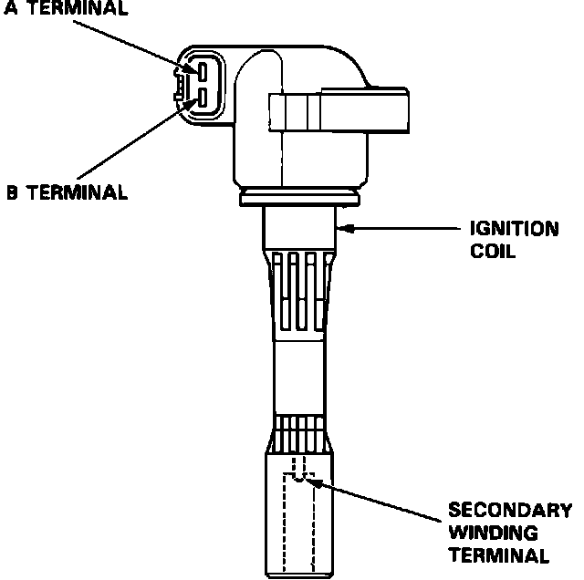

Ignition Coil: Description and Operation
Ignition Coil:

The ignition coils use the principle of mutual induction to step up battery (low) voltage to ignition (high) voltage. The ignition coils contain two sets of copper wire windings around a soft iron core. The primary winding is made of a hundred or so turns of a heavy gage wire. It is connected to the battery (through the ignition switch) so that current flows through it, thus creating a magnetic field.
When current flow in the primary winding is stopped (by the ignitor breaking the circuit ground), the collapse of the magnetic field causes a high voltage (20'000 volts or more) to be induced in the secondary windings. The amount of turns in the secondary winding is proportionally higher than the amount of turns in the primary winding, depending on the desired output voltage. The ratio is approx. 1 to 110.
The ignition coils are located at each spark plug.